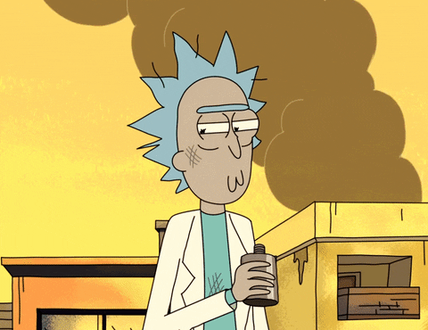

About Rick and Morty!
Rick and Morty (em português Rick e Morty) é uma série de animação adulta norte-americana de comédia e ficção científica criada por Justin Roiland e Dan Harmon para o bloco de programação noturno Adult Swim, exibido no canal Cartoon Network. A série estreou em 2 de dezembro de 2013 e acompanha as perigosas aventuras do cientista alcoólatra Rick e seu neto Morty, que divide seu tempo entre a vida familiar e viagens interdimensionais. Em 2016, suas duas primeiras temporadas foram lançadas na Netflix com a dublagem brasileira realizada pelo estúdio Dubbing Company, de Campinas, com tradução de Carlos Freires, e também foi transmitida nos canais pagos TBS, I.Sat e TNT Séries, atualmente é exibida no Brasil pelo canal Warner Channel desde 4 de maio de 2020 com a estreia do bloco do Adult Swim no canal. Em agosto de 2015, o Adult Swim renovou a série para uma terceira temporada de 10 episódios, que estreou no dia 1 de abril de 2017 com o resto da temporada programada para ir ao ar durante o verão do mesmo ano.[1] A série se originou de uma paródia animada em curta-metragem do filme De Volta Para o Futuro criada por Roiland para o festival de cinema Channel 101. A Adult Swim abordou Harmon a respeito de ideias para um programa de televisão, então ele e Roiland desenvolveram o programa com base no curta, substituindo os personagens de Doc com Rick e Marty com Morty.